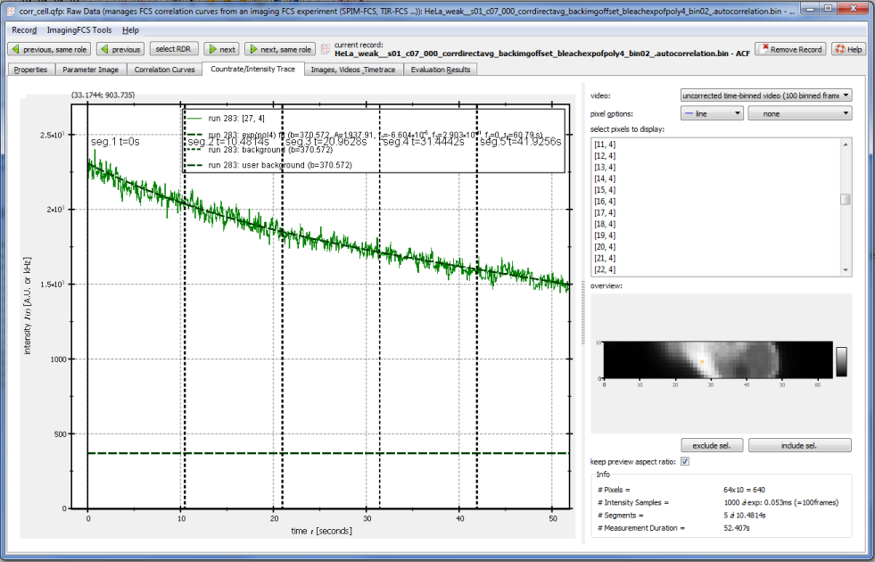
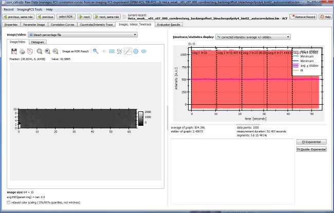
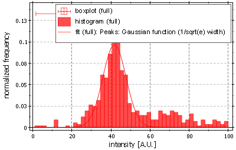
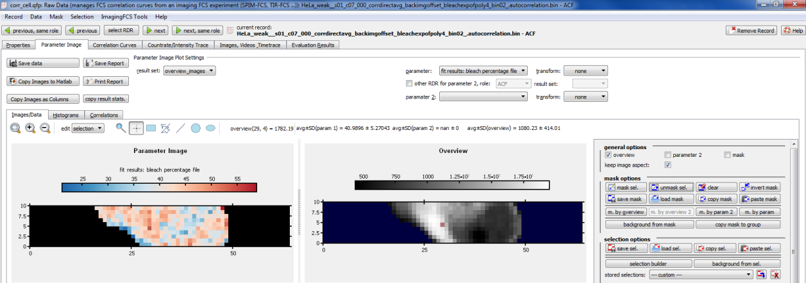
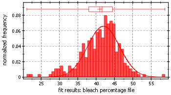

$$qf_commondoc_header.start$$ $$qf_commondoc_header.end$$
Introduction
It is often interesting to estimate the amount of bleaching of the fluorescnece during a measurement. This tutorial explains how to do that. Typically we propose to set the laser power to a setting with which the bleaching is limited to less than 50-60% during the acquisition (typically ~60s).
Tutorial
- Correlate your dataset as usual for your imFCS evaluation, using your typical bleach correction (often exp(poly4) for cell data).
- Open the imFCS RDR editor by double-clicking the according record in the project tree and choose the tab Countrate/Intensity Trace. Therein select the "uncorrected time-binned video" at the top-right of the window:

- In this plot you can view the bleaching on any pixel, that you can select in the overview image at the bottom-right. The plot shows the intensity timetrace (green solid curve), the bleach-correction fit (dark-green, dashed, if applicable) and the background-level (dotted horizontal line) extracted from the background image series. From this curve you can extract three numbers (values given for the example above):
- background level: $(B=370.5)$
- initial intensity: $(I_0=2303)$
- final intensity: $(I_1=1490)$
From these you can calculate the percentage of bleaching: $[ p_{bleach}=\frac{I_1-I_0}{I_1-B}\approx42\%. ]$
- The correlator in this plugin performs this calculation for every pixel. To view this information, select the tab Images, Videos, Timetraces. and therein choose the image/video = bleach percentage file:

As you can see, the color-scale shows a large range. By choosing the histogram-tab, you can view the distribution of bleaching a bit better. YOu can also set the range to auto and choose the limits 0..100:

So the bleaching was ~44% on average (median of the distribution).
- To combine this image with a mask for the image, go back to the Image/Video tab and click the button Image as RDR Result above the image. This saves the image of bleach percentage as a fit result, which can be selected in the tab Parameter Image:

Here you can also define a mask for the measurement (e.g. by the menu Mask | mask by overview), which allows to measure bleaching percentage only for those pixels, which actually contain fluorescnece:
